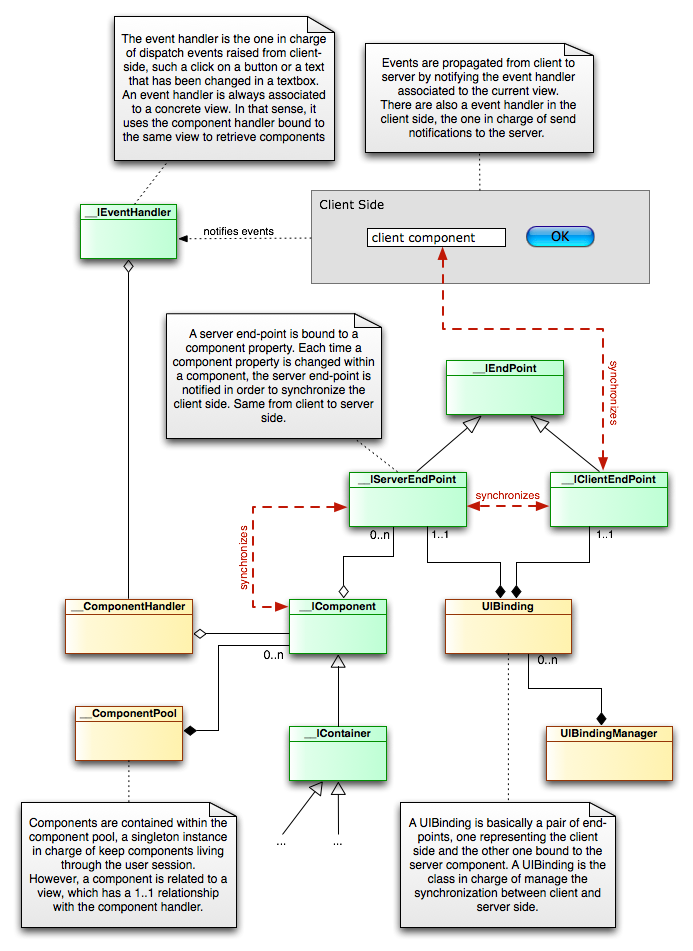

<table cellpadding="10" cellspacing="0" width="100%" border="0"><tr><td valign="top">
<div><a name=""></a><h1>The Component Execution Model</h1>
  <div class="ref-purpose">How components live</div>
 <div class="ref-synopsis"></div>
<h2>Table of Contents</h2>
<ul>

<a href="../../View/Components/tutorial_View.ComponentExecutionModel.pkg.html#event_mgmnt_system">Overview</a><br />

<a href="../../View/Components/tutorial_View.ComponentExecutionModel.pkg.html#event_handler">Event handler</a><br />

<a href="../../View/Components/tutorial_View.ComponentExecutionModel.pkg.html#end_points">End-points</a><br />
</ul>

 <p></p>
 <span><a name="event_mgmnt_system"></a><h2>Overview</h2><p>The component execution model is the piece in charge of:
  <ul><li>Synchronize status between components and their client representation.</li>
    <li>Execute the appropriate code in response to events, by delegating on the event management system.</li></ul></p>
  <p>Let's see it in a diagram:</p>
  <p></p>
  <p>Most important pieces within this diagram are:
  <ul><li><strong>Event handler</strong>: The event handler is notified about events as soon as they are fired from the user interface. Lion brings a default implementation, really useful since it has a naming convention to define methods associated to events and components: The <a href="../../ComponentModel/__EventHandler.html">__EventHandler</a> class.</li>
    <li><strong>End-points</strong>: End points are classes representing properties, callbacks and whatever we need to bind between components and their interface representations.<br />
    In that sense, there are 2 kind of end-points: 
    <ul><li><strong>Client end-points</strong>, representing what we need to bind from the client-side (i.e. a text property within an HTML input element)</li>
      <li><strong>Server end-points</strong>, representin what we bind to components (i.e. a text property within a server-side component representing a text area).</li></ul>
    A pair compound by a client and a server end-points is what we associate in what we know as <strong>UI Binding</strong>, a rule about how client and server are synchronized to.</li>
    <li><strong>Component Pool</strong>: A collection where all the components within our application are living in. Components implementing the <a href="../../ComponentModel/__IPoolable.html">__IPoolable</a> are stored automatically in the component pool during the user session until they are deleted.</li>
    <li><strong>Component Handler</strong>: Contain a reference to all the components associated to a concrete view.</li></ul></p></span>
 <span><a name="event_handler"></a><h2>Event handler</h2><p>Everytime an event is fired in the client-side (i.e. a click on a button or just by changing the selection in a combobox) a piece within the server side will catch the event and execute a concrete code (if defined) as a consequence of it.</p>
  <p>The event handler is the piece in charge of perform this task. To read more about event handling in Lion, take a look at <a href="../../View/Components/tutorial_View.EventManagementSystem.pkg.html">Event Handlers</a>.</p></span>
 <span><a name="end_points"></a><h2>End-points</h2><p>End-points represents properties, callbacks and</p></span></div>
      </td></tr></table>